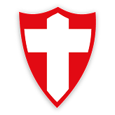
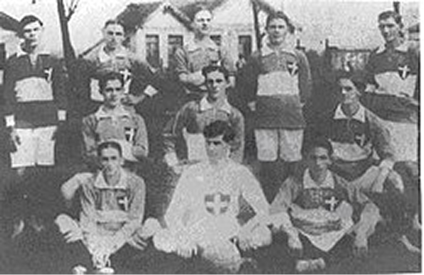
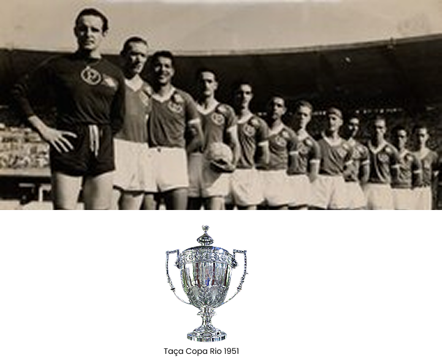
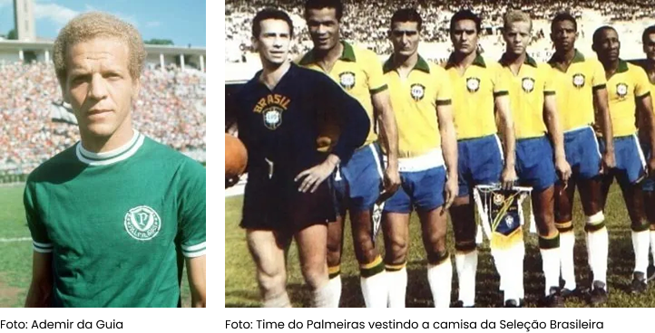
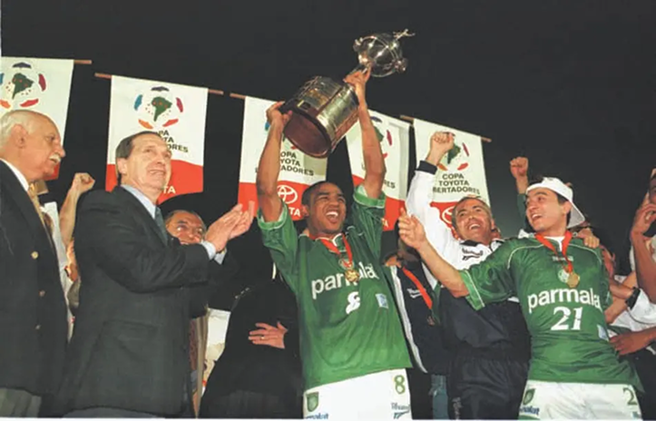
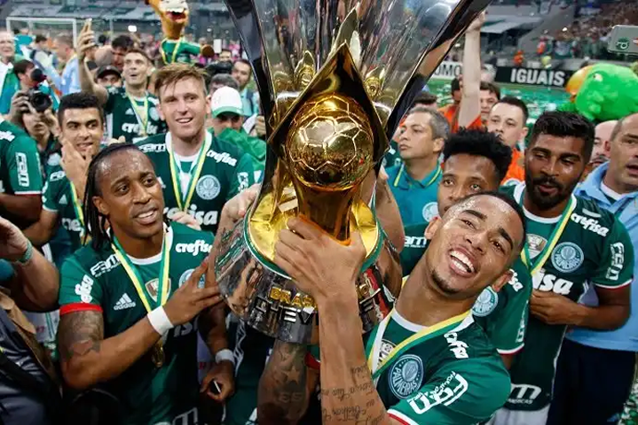
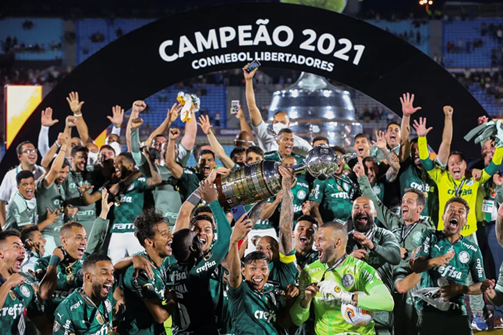

História do Palmeiras


1914
Nascimento da Sociedade Esportiva Palmeiras
A trajetória da Sociedade Esportiva Palmeiras teve início em 26 de agosto de 1914, fruto da iniciativa de imigrantes italianos radicados em São Paulo, que batizaram a agremiação originalmente como Palestra Italia.
1951
Palmeiras é consagrado como primeiro Campeão Mundial
Entre o final da década de 40 e o início dos anos 50, o Palmeiras viveu uma fase gloriosa, coroada com a conquista de um de seus troféus internacionais mais prestigiados. No Maracanã, diante de uma plateia superior a 100 mil torcedores, o time paulista superou a Juventus da italia na decisão da Copa Rio de 1951. Anos mais tarde, a relevância do torneio foi ratificada pela FIFA, que o reconheceu como a primeira edição do Mundial de Clubes.


1965
A primeira Academia de Futebol
A era da Academia. Sob o comando de Ademir da Guia, o Palmeiras encantou o Brasil com um futebol de gala. O prestígio era tão grande que, em 1965, o elenco alviverde vestiu a 'Amarelinha' e representou a Seleção Brasileira em uma vitória sobre o Uruguai.
1999
A Glória Eterna da América
Liderado pelo "Santo" Marcos no gol e craques como Alex e Paulo Nunes, o Palmeiras conquistou sua primeira Copa Libertadores da América em uma final dramática contra o Deportivo Cali no antigo Palestra Italia.


2015-2016
A Reconstrução e a Volta por Cima
A volta do gigante. Com a inauguração do Allianz Parque e uma gestão moderna, o Palmeiras retomou seu protagonismo. Após o título da Copa do Brasil de 2015, o Verdão conquistou o Enea campeonato brasileiro em 2016, reafirmando sua posição como o maior campeão do Brasil.
2020-Atualmente
A Terceira Academia (Era Abel Ferreira)
A Terceira Academia. A chegada de Abel Ferreira deu início a uma das eras mais vitoriosas da história alviverde. Com um futebol resiliente e estratégico, o Palmeiras conquistou o histórico Bicampeonato da Libertadores (2020 e 2021) e segue dominando o cenário nacional.
